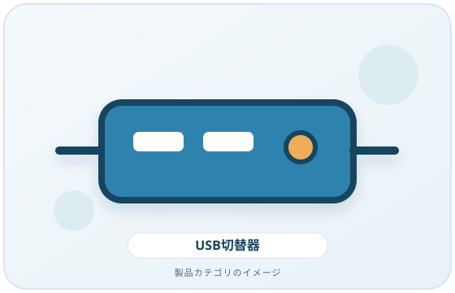
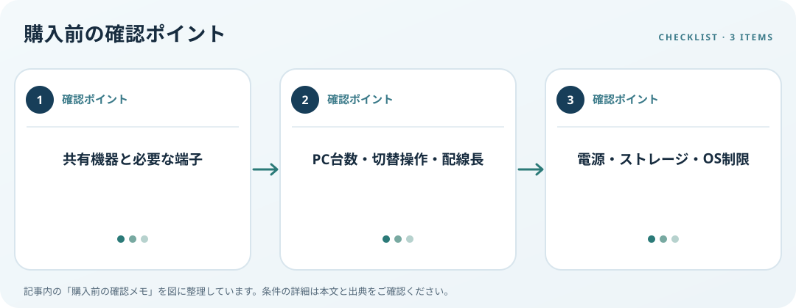

共有する周辺機器、PC台数、端子、切替操作と電源条件を照合します。この記事では仕様の確認順を整理します。
画像・ボタンはAmazonアソシエイトリンクです。適格購入により紹介料を得る場合があります。

Amazon.co.jpで「USB 切替器 2台 パソコン」を探す ↗

共有する機器を列挙
キーボードやマウスだけか、プリンターやストレージも接続するかを決めます。機器ごとに必要端子、電力、OS対応、専用ソフトが異なります。切替器のポート数だけで接続可能性を推定せず、PC側と周辺機器側の構成を書き出します。
操作方法と配線を確認
ボタン、リモコン、ホットキーなど切替方法と接続するPCの台数を照合します。スイッチ本体を手の届く場所に置けるか、切替状態の表示があるか、別途必要なケーブルがあるかも確認します。USB-C端子があってもデータや給電の対応範囲は製品ごとに違います。
電源とデータの制約を読む
接続機器の電力条件、外部電源の有無、OSやドライバー要件を仕様表で確認します。ストレージを共有する場合は同時接続できると決めつけず、説明書の手順に従います。職場PCのセキュリティ設定やUSB機器の利用制限も購入前に確認しましょう。
購入前の確認メモ
- 共有機器と必要な端子
- PC台数・切替操作・配線長
- 電源・ストレージ・OS制限
この記事は出典の公開情報を購入前の確認項目に整理したもので、特定商品の使用・実測・レビュー・ランキング・価格・在庫の調査は行っていません。購入時には利用機器メーカーの最新仕様をご確認ください。
出典
- Cables and Connectors — USB-IF（確認日: 2026-10-10）
- Input accessibility — Microsoft（確認日: 2026-10-10）
- Pair a Bluetooth device — Microsoft（確認日: 2026-10-10）